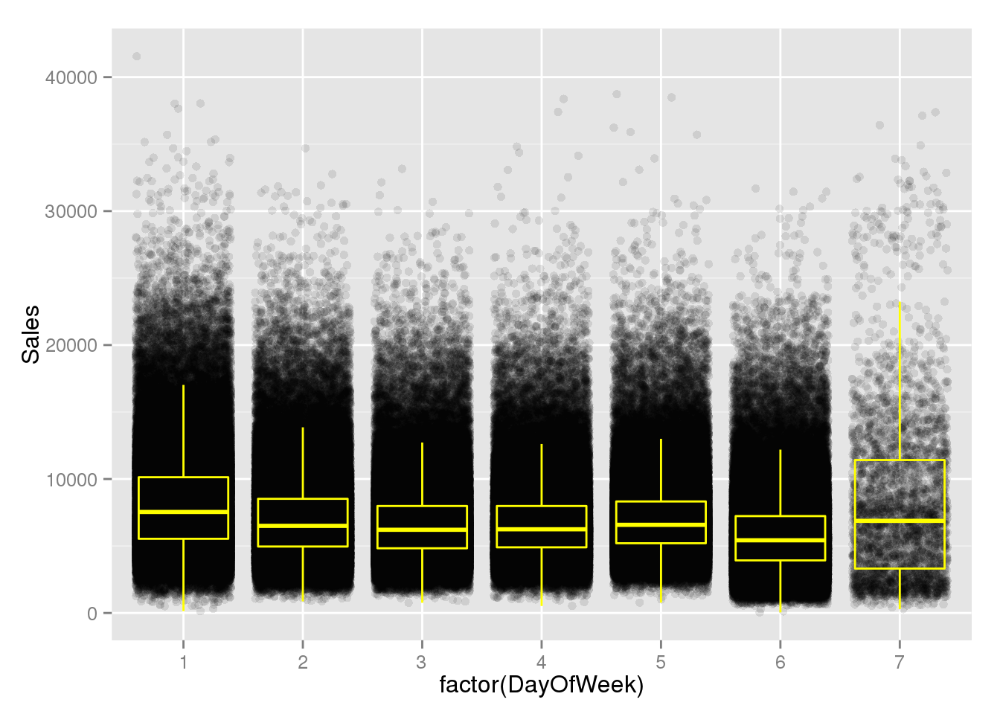
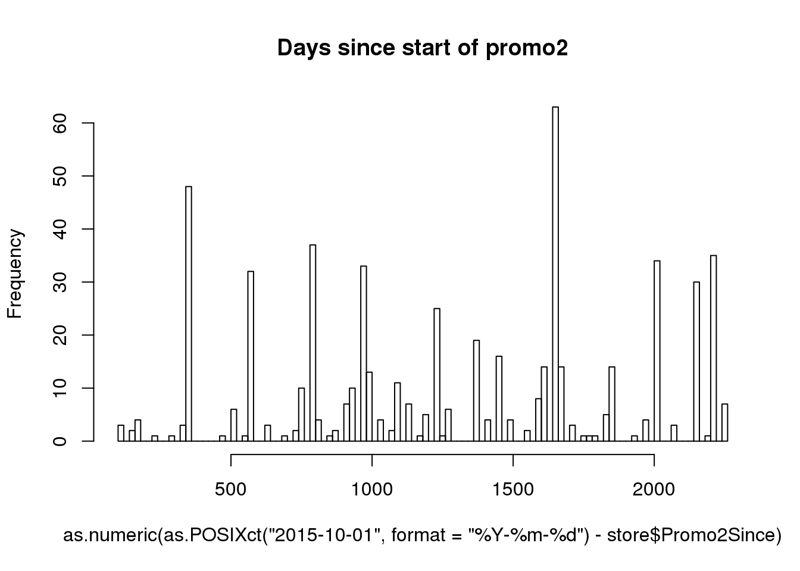

Rossmann Exploratory Analysis
Christian Thiele
- Oktober 2015
This is an exploratory analysis of the Rossmann Store Sales data which can be found here. The data isn’t huge but the speedup using data.table is noticeable. It is nice to have unmasked data which allows for some interpretations.
Read in the data:
library(data.table)
library(zoo)##
## Attaching package: 'zoo'
##
## The following objects are masked from 'package:base':
##
## as.Date, as.Date.numericlibrary(forecast)## Loading required package: timeDate
## Loading required package: methods
## This is forecast 6.2library(ggplot2)
test <- fread("../input/test.csv")
train <- fread("../input/train.csv")
store <- fread("../input/store.csv")Let’s have a first look at the data:
str(train)## Classes 'data.table' and 'data.frame': 1017209 obs. of 9 variables:
## $ Store : int 1 2 3 4 5 6 7 8 9 10 ...
## $ DayOfWeek : int 5 5 5 5 5 5 5 5 5 5 ...
## $ Date : chr "2015-07-31" "2015-07-31" "2015-07-31" "2015-07-31" ...
## $ Sales : int 5263 6064 8314 13995 4822 5651 15344 8492 8565 7185 ...
## $ Customers : int 555 625 821 1498 559 589 1414 833 687 681 ...
## $ Open : int 1 1 1 1 1 1 1 1 1 1 ...
## $ Promo : int 1 1 1 1 1 1 1 1 1 1 ...
## $ StateHoliday : chr "0" "0" "0" "0" ...
## $ SchoolHoliday: chr "1" "1" "1" "1" ...
## - attr(*, ".internal.selfref")=<externalptr>str(test)## Classes 'data.table' and 'data.frame': 41088 obs. of 8 variables:
## $ Id : int 1 2 3 4 5 6 7 8 9 10 ...
## $ Store : int 1 3 7 8 9 10 11 12 13 14 ...
## $ DayOfWeek : int 4 4 4 4 4 4 4 4 4 4 ...
## $ Date : chr "2015-09-17" "2015-09-17" "2015-09-17" "2015-09-17" ...
## $ Open : int 1 1 1 1 1 1 1 1 1 1 ...
## $ Promo : int 1 1 1 1 1 1 1 1 1 1 ...
## $ StateHoliday : chr "0" "0" "0" "0" ...
## $ SchoolHoliday: chr "0" "0" "0" "0" ...
## - attr(*, ".internal.selfref")=<externalptr>str(store)## Classes 'data.table' and 'data.frame': 1115 obs. of 10 variables:
## $ Store : int 1 2 3 4 5 6 7 8 9 10 ...
## $ StoreType : chr "c" "a" "a" "c" ...
## $ Assortment : chr "a" "a" "a" "c" ...
## $ CompetitionDistance : int 1270 570 14130 620 29910 310 24000 7520 2030 3160 ...
## $ CompetitionOpenSinceMonth: int 9 11 12 9 4 12 4 10 8 9 ...
## $ CompetitionOpenSinceYear : int 2008 2007 2006 2009 2015 2013 2013 2014 2000 2009 ...
## $ Promo2 : int 0 1 1 0 0 0 0 0 0 0 ...
## $ Promo2SinceWeek : int NA 13 14 NA NA NA NA NA NA NA ...
## $ Promo2SinceYear : int NA 2010 2011 NA NA NA NA NA NA NA ...
## $ PromoInterval : chr "" "Jan,Apr,Jul,Oct" "Jan,Apr,Jul,Oct" "" ...
## - attr(*, ".internal.selfref")=<externalptr># head(train); tail(train)
# head(test); tail(test)
train[, Date := as.Date(Date)]
test[, Date := as.Date(Date)]
store## Store StoreType Assortment CompetitionDistance
## 1: 1 c a 1270
## 2: 2 a a 570
## 3: 3 a a 14130
## 4: 4 c c 620
## 5: 5 a a 29910
## ---
## 1111: 1111 a a 1900
## 1112: 1112 c c 1880
## 1113: 1113 a c 9260
## 1114: 1114 a c 870
## 1115: 1115 d c 5350
## CompetitionOpenSinceMonth CompetitionOpenSinceYear Promo2
## 1: 9 2008 0
## 2: 11 2007 1
## 3: 12 2006 1
## 4: 9 2009 0
## 5: 4 2015 0
## ---
## 1111: 6 2014 1
## 1112: 4 2006 0
## 1113: NA NA 0
## 1114: NA NA 0
## 1115: NA NA 1
## Promo2SinceWeek Promo2SinceYear PromoInterval
## 1: NA NA
## 2: 13 2010 Jan,Apr,Jul,Oct
## 3: 14 2011 Jan,Apr,Jul,Oct
## 4: NA NA
## 5: NA NA
## ---
## 1111: 31 2013 Jan,Apr,Jul,Oct
## 1112: NA NA
## 1113: NA NA
## 1114: NA NA
## 1115: 22 2012 Mar,Jun,Sept,Dectrain <- train[order(Date)]
test <- test[order(Date)]
summary(train)## Store DayOfWeek Date Sales
## Min. : 1.0 Min. :1.000 Min. :2013-01-01 Min. : 0
## 1st Qu.: 280.0 1st Qu.:2.000 1st Qu.:2013-08-17 1st Qu.: 3727
## Median : 558.0 Median :4.000 Median :2014-04-02 Median : 5744
## Mean : 558.4 Mean :3.998 Mean :2014-04-11 Mean : 5774
## 3rd Qu.: 838.0 3rd Qu.:6.000 3rd Qu.:2014-12-12 3rd Qu.: 7856
## Max. :1115.0 Max. :7.000 Max. :2015-07-31 Max. :41551
## Customers Open Promo StateHoliday
## Min. : 0.0 Min. :0.0000 Min. :0.0000 Length:1017209
## 1st Qu.: 405.0 1st Qu.:1.0000 1st Qu.:0.0000 Class :character
## Median : 609.0 Median :1.0000 Median :0.0000 Mode :character
## Mean : 633.1 Mean :0.8301 Mean :0.3815
## 3rd Qu.: 837.0 3rd Qu.:1.0000 3rd Qu.:1.0000
## Max. :7388.0 Max. :1.0000 Max. :1.0000
## SchoolHoliday
## Length:1017209
## Class :character
## Mode :character
##
##
## summary(test)## Id Store DayOfWeek Date
## Min. : 1 Min. : 1.0 Min. :1.000 Min. :2015-08-01
## 1st Qu.:10273 1st Qu.: 279.8 1st Qu.:2.000 1st Qu.:2015-08-12
## Median :20544 Median : 553.5 Median :4.000 Median :2015-08-24
## Mean :20544 Mean : 555.9 Mean :3.979 Mean :2015-08-24
## 3rd Qu.:30816 3rd Qu.: 832.2 3rd Qu.:6.000 3rd Qu.:2015-09-05
## Max. :41088 Max. :1115.0 Max. :7.000 Max. :2015-09-17
##
## Open Promo StateHoliday SchoolHoliday
## Min. :0.0000 Min. :0.0000 Length:41088 Length:41088
## 1st Qu.:1.0000 1st Qu.:0.0000 Class :character Class :character
## Median :1.0000 Median :0.0000 Mode :character Mode :character
## Mean :0.8543 Mean :0.3958
## 3rd Qu.:1.0000 3rd Qu.:1.0000
## Max. :1.0000 Max. :1.0000
## NA's :11test[is.na(test$Open), ] # Only store 622## Id Store DayOfWeek Date Open Promo StateHoliday SchoolHoliday
## 1: 10752 622 6 2015-09-05 NA 0 0 0
## 2: 9040 622 1 2015-09-07 NA 0 0 0
## 3: 8184 622 2 2015-09-08 NA 0 0 0
## 4: 7328 622 3 2015-09-09 NA 0 0 0
## 5: 6472 622 4 2015-09-10 NA 0 0 0
## 6: 5616 622 5 2015-09-11 NA 0 0 0
## 7: 4760 622 6 2015-09-12 NA 0 0 0
## 8: 3048 622 1 2015-09-14 NA 1 0 0
## 9: 2192 622 2 2015-09-15 NA 1 0 0
## 10: 1336 622 3 2015-09-16 NA 1 0 0
## 11: 480 622 4 2015-09-17 NA 1 0 0test$Open[test$Store == 622]## [1] 1 0 1 1 1 1 1 1 0 1 1 1 1 1 1 0 1 1 1 1 1 1 0
## [24] 1 1 1 1 1 1 0 1 1 1 1 1 NA 0 NA NA NA NA NA NA 0 NA NA
## [47] NA NAThe test set has just 41088 rows while the train set has 1017209 rows. The public leaderboard is based on 39% of the data (16024 rows) and the private leaderboard is based on 61% of the data (25064 rows). Store 622 has 11 missing values in the Open columns, but not all of the data in that column of that store is missing. As was pointed out here it should probably be imputed as 1.
Additionally, the whole Customers column is missing from the test data (since that data is only known ex post).
test[is.na(test)] <- 1During the test period there are no Easter or Christmas holidays but interestingly during a rather large portion of the time (44%) there are school holidays while that is the case for only 18% of the train data:
# Unique values per column
train[, lapply(.SD, function(x) length(unique(x)))]## Store DayOfWeek Date Sales Customers Open Promo StateHoliday
## 1: 1115 7 942 21734 4086 2 2 4
## SchoolHoliday
## 1: 2test[, lapply(.SD, function(x) length(unique(x)))]## Id Store DayOfWeek Date Open Promo StateHoliday SchoolHoliday
## 1: 41088 856 7 48 2 2 2 2# All test stores are also in the train data
sum(unique(test$Store) %in% unique(train$Store)) ## [1] 856# 259 train stores are not in the test data
sum(!(unique(train$Store) %in% unique(test$Store))) ## [1] 259table(train$Open) / nrow(train) # Percent Open Train##
## 0 1
## 0.1698933 0.8301067table(test$Open) / nrow(test) # Percent Open Test ##
## 0 1
## 0.1456386 0.8543614table(train$Promo) / nrow(train) # Percent of the time promo in train##
## 0 1
## 0.6184855 0.3815145table(test$Promo) / nrow(test) # Percent of the time promo in test##
## 0 1
## 0.6041667 0.3958333table(train$StateHoliday) / nrow(train) # Percent of the time holiday in train##
## 0 a b c
## 0.969475300 0.019917244 0.006576820 0.004030637table(test$StateHoliday) / nrow(test) # no b and c = no easter holiday and no christmas##
## 0 a
## 0.995619159 0.004380841table(train$SchoolHoliday) / nrow(train) # Percent of the time school holiday in train##
## 0 1
## 0.8213533 0.1786467table(test$SchoolHoliday) / nrow(test) # Percent of the time school holiday in test##
## 0 1
## 0.5565129 0.4434871There are no obvious breaks in the data. The test period ranges from 2015-08-01 to 2015-09-17, so the task is to predict 48 days. The train period ranges from 2013-01-01 to 2015-07-31.
plot(train$Date, type = "l")plot(test$Date, type = "l")# As expected all 856 stores to be predicted daily
all(table(test$Date) == 856) ## [1] TRUELet’s look at the columns that are unique to the train set:
hist(train$Sales, 100)hist(aggregate(train[Sales != 0]$Sales,
by = list(train[Sales != 0]$Store), mean)$x, 100,
main = "Mean sales per store when store was not closed")hist(train$Customers, 100)hist(aggregate(train[Sales != 0]$Customers,
by = list(train[Sales != 0]$Store), mean)$x, 100,
main = "Mean customers per store when store was not closed")
ggplot(train[Sales != 0], aes(x = factor(SchoolHoliday), y = Sales)) +
geom_jitter(alpha = 0.1) +
geom_boxplot(color = "yellow", outlier.colour = NA, fill = NA)ggplot(train[train$Sales != 0 & train$Customers != 0],
aes(x = log(Customers), y = log(Sales))) +
geom_point(alpha = 0.2) + geom_smooth()## geom_smooth: method="auto" and size of largest group is >=1000, so using gam with formula: y ~ s(x, bs = "cs"). Use 'method = x' to change the smoothing method.ggplot(train[train$Sales != 0 & train$Customers != 0],
aes(x = factor(Promo), y = Sales)) +
geom_jitter(alpha = 0.1) +
geom_boxplot(color = "yellow", outlier.colour = NA, fill = NA)ggplot(train[train$Sales != 0 & train$Customers != 0],
aes(x = factor(Promo), y = Customers)) +
geom_jitter(alpha = 0.1) +
geom_boxplot(color = "yellow", outlier.colour = NA, fill = NA)Note: I chose to not plot that data including days with 0 sales or customers because that would have biased the boxplots.
Sales is as expected strongly correlated with the number of customers. It looks like the Boxplots of customers overlap a little more than the boxplots of sales. This would mean that the promos are not mainly attracting more customers but make customers spend more. The mean amount spent per customer is about one Euro higher:
with(train[train$Sales != 0 & train$Promo == 0], mean(Sales / Customers))## [1] 8.941128with(train[train$Sales != 0 & train$Promo == 1], mean(Sales / Customers))## [1] 10.17896There are sometimes promos while the respective store is closed and there are promos 45% of the time:
table(ifelse(train$Sales != 0, "Sales > 0", "Sales = 0"),
ifelse(train$Promo, "Promo", "No promo"))##
## No promo Promo
## Sales = 0 161666 11205
## Sales > 0 467463 376875At least there are no sales when the stores are closed but there are some stores that, according to the data, made no sales although they were opened even if they had some customers. These observations may be errors in the data / outliers:
table(ifelse(train$Open == 1, "Opened", "Closed"),
ifelse(train$Sales > 0, "Sales > 0", "Sales = 0"))##
## Sales = 0 Sales > 0
## Closed 172817 0
## Opened 54 844338# That tends to happen on consecutive days. Some stores even had customers
# (who bought nothing?)
train[Open == 1 & Sales == 0]## Store DayOfWeek Date Sales Customers Open Promo StateHoliday
## 1: 762 4 2013-01-17 0 0 1 0 0
## 2: 232 4 2013-01-24 0 0 1 1 0
## 3: 339 3 2013-01-30 0 0 1 0 0
## 4: 339 4 2013-01-31 0 0 1 0 0
## 5: 259 4 2013-02-07 0 0 1 1 0
## 6: 353 6 2013-03-16 0 0 1 0 0
## 7: 948 4 2013-04-25 0 5 1 1 0
## 8: 589 1 2013-04-29 0 0 1 1 0
## 9: 364 2 2013-05-07 0 0 1 0 0
## 10: 364 3 2013-05-08 0 0 1 0 0
## 11: 681 5 2013-05-10 0 0 1 0 0
## 12: 700 3 2013-06-05 0 0 1 1 0
## 13: 665 5 2013-06-28 0 0 1 0 0
## 14: 665 6 2013-06-29 0 0 1 0 0
## 15: 1039 2 2013-07-09 0 0 1 0 0
## 16: 1039 3 2013-07-10 0 0 1 0 0
## 17: 927 4 2013-08-08 0 0 1 0 0
## 18: 391 3 2013-08-28 0 0 1 1 0
## 19: 663 1 2013-09-02 0 0 1 0 0
## 20: 983 5 2014-01-17 0 0 1 0 0
## 21: 983 6 2014-01-18 0 0 1 0 0
## 22: 623 5 2014-01-24 0 0 1 1 0
## 23: 623 6 2014-01-25 0 0 1 0 0
## 24: 25 3 2014-02-12 0 0 1 0 0
## 25: 25 4 2014-02-13 0 0 1 0 0
## 26: 327 3 2014-03-12 0 0 1 0 0
## 27: 986 2 2014-03-18 0 0 1 1 0
## 28: 850 6 2014-03-29 0 0 1 0 0
## 29: 661 5 2014-04-04 0 0 1 1 0
## 30: 1100 2 2014-04-29 0 3 1 1 0
## 31: 1100 3 2014-04-30 0 0 1 1 0
## 32: 1017 3 2014-06-04 0 0 1 1 0
## 33: 1017 4 2014-06-05 0 0 1 1 0
## 34: 57 2 2014-07-01 0 0 1 1 0
## 35: 925 4 2014-07-03 0 0 1 1 0
## 36: 102 6 2014-07-12 0 0 1 0 0
## 37: 882 3 2014-07-23 0 0 1 0 0
## 38: 887 3 2014-07-23 0 0 1 0 0
## 39: 102 4 2014-07-24 0 0 1 0 0
## 40: 238 4 2014-07-24 0 0 1 0 0
## 41: 303 4 2014-07-24 0 0 1 0 0
## 42: 387 4 2014-07-24 0 0 1 0 0
## 43: 28 2 2014-09-02 0 0 1 1 0
## 44: 28 3 2014-09-03 0 0 1 1 0
## 45: 28 4 2014-09-04 0 0 1 1 0
## 46: 548 5 2014-09-05 0 0 1 1 0
## 47: 835 3 2014-09-10 0 0 1 0 0
## 48: 227 4 2014-09-11 0 0 1 0 0
## 49: 835 4 2014-09-11 0 0 1 0 0
## 50: 357 1 2014-09-22 0 0 1 0 0
## 51: 708 3 2014-10-01 0 0 1 1 0
## 52: 699 4 2015-02-05 0 0 1 1 0
## 53: 674 4 2015-03-26 0 0 1 0 0
## 54: 971 5 2015-05-15 0 0 1 0 0
## Store DayOfWeek Date Sales Customers Open Promo StateHoliday
## SchoolHoliday
## 1: 0
## 2: 0
## 3: 0
## 4: 0
## 5: 0
## 6: 0
## 7: 0
## 8: 0
## 9: 0
## 10: 0
## 11: 0
## 12: 0
## 13: 0
## 14: 0
## 15: 0
## 16: 0
## 17: 1
## 18: 1
## 19: 1
## 20: 0
## 21: 0
## 22: 0
## 23: 0
## 24: 0
## 25: 0
## 26: 0
## 27: 0
## 28: 0
## 29: 0
## 30: 0
## 31: 0
## 32: 0
## 33: 0
## 34: 0
## 35: 0
## 36: 0
## 37: 1
## 38: 0
## 39: 1
## 40: 1
## 41: 1
## 42: 1
## 43: 1
## 44: 1
## 45: 0
## 46: 1
## 47: 0
## 48: 0
## 49: 0
## 50: 0
## 51: 0
## 52: 0
## 53: 0
## 54: 1
## SchoolHolidayThe stores have different amounts of days with zero sales. There are spikes in the sales before the stores close and after the reopen:
zerosPerStore <- sort(tapply(train$Sales, list(train$Store), function(x) sum(x == 0)))
hist(zerosPerStore,100)# Stores with the most zeros in their sales:
tail(zerosPerStore, 10)## 105 339 837 25 560 674 972 349 708 103
## 188 188 191 192 195 197 240 242 255 311# Some stores were closed for some time, some of those were closed multiple times
plot(train[Store == 972, Sales], ylab = "Sales", xlab = "Days", main = "Store 972")plot(train[Store == 103, Sales], ylab = "Sales", xlab = "Days", main = "Store 103")plot(train[Store == 708, Sales], ylab = "Sales", xlab = "Days", main = "Store 708")There are also stores that have no zeros in their sales. These are the exception since they are opened also on sundays / holidays. The sales of those stores on sundays are particularly high:
ggplot(train[Store == 85],
aes(x = Date, y = Sales,
color = factor(DayOfWeek == 7), shape = factor(DayOfWeek == 7))) +
geom_point(size = 3) + ggtitle("Sales of store 85 (True if sunday)")ggplot(train[Store == 262],
aes(x = Date, y = Sales,
color = factor(DayOfWeek == 7), shape = factor(DayOfWeek == 7))) +
geom_point(size = 3) + ggtitle("Sales of store 262 (True if sunday)")That is not true in general. The variability of sales on sundays is quite high while the median is not:
ggplot(train[Sales != 0],
aes(x = factor(DayOfWeek), y = Sales)) +
geom_jitter(alpha = 0.1) +
geom_boxplot(color = "yellow", outlier.colour = NA, fill = NA)
The store file contains information about the stores that can be linked to train and test via the store ID.
summary(store)## Store StoreType Assortment
## Min. : 1.0 Length:1115 Length:1115
## 1st Qu.: 279.5 Class :character Class :character
## Median : 558.0 Mode :character Mode :character
## Mean : 558.0
## 3rd Qu.: 836.5
## Max. :1115.0
##
## CompetitionDistance CompetitionOpenSinceMonth CompetitionOpenSinceYear
## Min. : 20.0 Min. : 1.000 Min. :1900
## 1st Qu.: 717.5 1st Qu.: 4.000 1st Qu.:2006
## Median : 2325.0 Median : 8.000 Median :2010
## Mean : 5404.9 Mean : 7.225 Mean :2009
## 3rd Qu.: 6882.5 3rd Qu.:10.000 3rd Qu.:2013
## Max. :75860.0 Max. :12.000 Max. :2015
## NA's :3 NA's :354 NA's :354
## Promo2 Promo2SinceWeek Promo2SinceYear PromoInterval
## Min. :0.0000 Min. : 1.0 Min. :2009 Length:1115
## 1st Qu.:0.0000 1st Qu.:13.0 1st Qu.:2011 Class :character
## Median :1.0000 Median :22.0 Median :2012 Mode :character
## Mean :0.5121 Mean :23.6 Mean :2012
## 3rd Qu.:1.0000 3rd Qu.:37.0 3rd Qu.:2013
## Max. :1.0000 Max. :50.0 Max. :2015
## NA's :544 NA's :544table(store$StoreType)##
## a b c d
## 602 17 148 348table(store$Assortment)##
## a b c
## 593 9 513# There is a connection between store type and type of assortment
table(data.frame(Assortment = store$Assortment, StoreType = store$StoreType))## StoreType
## Assortment a b c d
## a 381 7 77 128
## b 0 9 0 0
## c 221 1 71 220hist(store$CompetitionDistance, 100)# Convert the CompetitionOpenSince... variables to one Date variable
store$CompetitionOpenSince <- as.yearmon(paste(store$CompetitionOpenSinceYear,
store$CompetitionOpenSinceMonth, sep = "-"))
# One competitor opened 1900
hist(as.yearmon("2015-10") - store$CompetitionOpenSince, 100,
main = "Years since opening of nearest competition")# Convert the Promo2Since... variables to one Date variable
# Assume that the promo starts on the first day of the week
store$Promo2Since <- as.POSIXct(paste(store$Promo2SinceYear,
store$Promo2SinceWeek, 1, sep = "-"),
format = "%Y-%U-%u")
hist(as.numeric(as.POSIXct("2015-10-01", format = "%Y-%m-%d") - store$Promo2Since),
100, main = "Days since start of promo2")
table(store$PromoInterval)##
## Feb,May,Aug,Nov Jan,Apr,Jul,Oct Mar,Jun,Sept,Dec
## 544 130 335 106The stores with promos tend to make lower sales. This does not necessary mean that the promos don’t help or are counterproductive. They are possibly measures that are taken mainly by stores with low sales in the first place:
# Merge store and train
train_store <- merge(train, store, by = "Store")
ggplot(train_store[Sales != 0], aes(x = factor(PromoInterval), y = Sales)) +
geom_jitter(alpha = 0.1) +
geom_boxplot(color = "yellow", outlier.colour = NA, fill = NA)
The different store types and assortment types imply different overall levels of sales and seem to be exhibiting different trends:
ggplot(train_store[Sales != 0],
aes(x = as.Date(Date), y = Sales, color = factor(StoreType))) +
geom_smooth(size = 1)## geom_smooth: method="auto" and size of largest group is >=1000, so using gam with formula: y ~ s(x, bs = "cs"). Use 'method = x' to change the smoothing method.ggplot(train_store[Customers != 0],
aes(x = as.Date(Date), y = Customers, color = factor(StoreType))) +
geom_smooth(size = 1)## geom_smooth: method="auto" and size of largest group is >=1000, so using gam with formula: y ~ s(x, bs = "cs"). Use 'method = x' to change the smoothing method.ggplot(train_store[Sales != 0],
aes(x = as.Date(Date), y = Sales, color = factor(Assortment))) +
geom_smooth(size = 1)## geom_smooth: method="auto" and size of largest group is >=1000, so using gam with formula: y ~ s(x, bs = "cs"). Use 'method = x' to change the smoothing method.ggplot(train_store[Sales != 0],
aes(x = as.Date(Date), y = Customers, color = factor(Assortment))) +
geom_smooth(size = 1)## geom_smooth: method="auto" and size of largest group is >=1000, so using gam with formula: y ~ s(x, bs = "cs"). Use 'method = x' to change the smoothing method.The effect of the distance to the next competitor is a little counterintuitive. Lower distance to the next competitor implies (slightly, possibly not significantly) higher sales. This may occur (my assumption) because stores with a low distance to the next competitor are located in inner cities or crowded regions with higher sales in general. Maybe the effects of being in a good / bad region and having a competitor / not having a competitor cancel out:
salesByDist <- aggregate(train_store[Sales != 0 & !is.na(CompetitionDistance)]$Sales,
by = list(train_store[Sales != 0 & !is.na(CompetitionDistance)]$CompetitionDistance), mean)
colnames(salesByDist) <- c("CompetitionDistance", "MeanSales")
ggplot(salesByDist, aes(x = log(CompetitionDistance), y = log(MeanSales))) +
geom_point() + geom_smooth()## geom_smooth: method="auto" and size of largest group is <1000, so using loess. Use 'method = x' to change the smoothing method.A missing value for CompetitionDistance doesn’t necessarily mean that there is no competiton. Maybe that data was just not collected, yet. There is no obvious connection between sales and having NA as CompetitionDistance:
ggplot(train_store[Sales != 0],
aes(x = factor(!is.na(CompetitionOpenSinceYear)), y = Sales)) +
geom_jitter(alpha = 0.1) +
geom_boxplot(color = "yellow", outlier.colour = NA, fill = NA) +
ggtitle("Any competition?")So what happens if a competitor opens? In order to assess this effect we fetch data from all stores that first have NA as CompetitorDistance and later some value. Only the month, not the date, of the opening of the competitor is known so we need a rather large window to see the effect (100 days). 147 stores had a competitor move into their area during the available time span. The competition leaves a ‘dent’ in the sales which looks a little different depending on the chosen timespan so I wouldn’t like to argue about statistical significance based on this plot alone. It’s informative to look at anyway:
# Sales before and after competition opens
train_store$DateYearmon <- as.yearmon(train_store$Date)
train_store <- train_store[order(Date)]
timespan <- 100 # Days to collect before and after Opening of competition
beforeAndAfterComp <- function(s) {
x <- train_store[Store == s]
daysWithComp <- x$CompetitionOpenSince >= x$DateYearmon
if (any(!daysWithComp)) {
compOpening <- head(which(!daysWithComp), 1) - 1
if (compOpening > timespan & compOpening < (nrow(x) - timespan)) {
x <- x[(compOpening - timespan):(compOpening + timespan), ]
x$Day <- 1:nrow(x)
return(x)
}
}
}
temp <- lapply(unique(train_store[!is.na(CompetitionOpenSince)]$Store), beforeAndAfterComp)
temp <- do.call(rbind, temp)
# 147 stores first had no competition but at least 100 days before the end
# of the data set
length(unique(temp$Store))## [1] 147ggplot(temp[Sales != 0], aes(x = Day, y = Sales)) +
geom_smooth() +
ggtitle(paste("Competition opening around day", timespan))## geom_smooth: method="auto" and size of largest group is >=1000, so using gam with formula: y ~ s(x, bs = "cs"). Use 'method = x' to change the smoothing method.The seasonplot is adapted from spsrini:
temp <- as.data.frame(train)
temp$year <- as.factor(format(temp$Date, "%Y"))
temp$month <- as.factor(format(temp$Date, "%m"))
agg <- aggregate(Sales ~ ., data=temp[, c("Sales", "month" ,"year")], FUN=sum)
SalesTS <- ts(agg$Sales, start=2013, frequency=12)
col = rainbow(3)
seasonplot(SalesTS, col=col, year.labels.left = TRUE, pch=19, las=1)